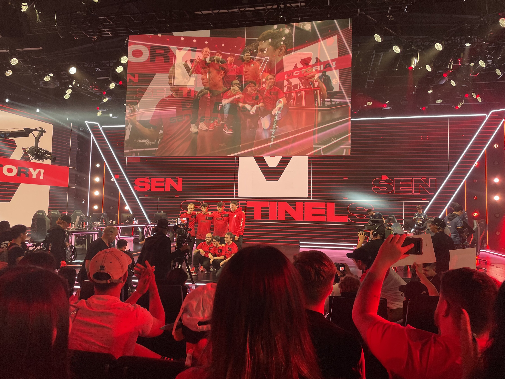

Gina Nguyen
I am a dedicated student currently pursuing a Bachelors of Science degree in Medical Anthropology from the University of California, Riverside. Highly motivated and organized, eager to apply time management skills and collaborate with others in various environments. Seeking entry-level opportunities to expand skills while facilitating company growth. Interested in the esports and gaming industry and looking for opportunities to showcase my passion in those fields. I am currently looking into the field of UX/UI design and seeing where that will lead me. In the summer, I will be trying to build a portfolio and if successful, I will be leaning my future career towards the technology field. Will be working on my skills of photoshop and editing and considering taking a bootcamp if everything goes well.
Growing up, I have always been unsure of my future and not sure of what I wanted to do. The most difficult part was having to choose a specific major in order to apply to college because at eighteen years old, I did not even know what I wanted to do for the rest of my life. I have had my own passions regarding gaming and esports, but professionally, I always went back to the medical field. However, reflecting on myself, I know that my own wellbeing would not be able to withstand the demand that comes with medical school and what the job entails. I have explored many options and even now I am still unsure, but following my path on Anthropology, I have learned so much about the world and the reason why humans are the way we are. I am currently taking lower-division anthropology classes and in Winter 2023 will begin my upper-division courses. I intend on graduating earlier or by Spring 2026 and looking to relocate to San Diego, California.
Putting aside my professional and educational goals, my passion has always lied with gaming and esports. I was introduced to video games when I was younger by my older brother and since then, it has become an integral part of my life and I would not be the person I am today without it. Although I was always playing video games, my brother introduced me to the world of esports starting with the game Counter Strike: Global Offensive. I would watch tournament games with him and watch the pro players pursue their dreams which inspired me. Surrounding myself in this community, I have met lifelong friends and learned valuable life lessons. To further pursue this dream of mine, I am the captain of the Female/Non-binary VALORANT team here at UCR and am able to play with other fe/nb identifying players who have the same passion and interests as I do. In such a male-dominated community, I have experienced sexism and toxicity but has never let that stopped me from pursuing my passion. Because the community and workplace of gaming is so very male-dominated, I want to work towards opening the space for more females and to allow them to see that even though we may be looked down upon, girls can play video games too.
Experience
Volunteer for Highlander Gaming
• Successfully collaborated with staff with the setup and management of the event
• Assisted attendees and ensured a smooth check-in to the event
• Supervised different rooms and activities for the safety of others
Vice President of Key Club
• Delegated tasks when the president was not available
• Presided and assisted with biweekly board meetings
• Collaborated with fellow board members in order to fundraise and create service events for the term, accumulating over 800 total service hours
Treasurer of Key Club
• Transacted club business through a school account
• Maintained accurate financial records throughout the year to be reviewed by the club and administration
• Outreached to local businesses to hold fundraising opportunities
• Coordinated with the faculty advisor and club secretary to update the club roster and submit dues through the Membership Update Center
Education
UC Riverside
Portfolio
